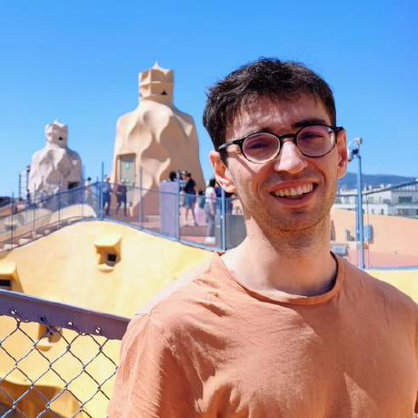

Andrei Constantinescu
Paris, France
Staff Data Scientist building ML infrastructure at scale. Currently exploring what to build next.
Staff Data Scientist at Shift Technology, where I've spent 7+ years designing and operating back-end systems and ML infrastructure powering fraud detection and document processing for 25+ insurance clients. I've built platforms used by 200+ engineers and shipped LLM-based and ML services handling 50M+ documents and 1B+ claims per year.
Selected work
-
Document Processing Pipeline
Event-driven Azure architecture unifying real-time and batch processing — Python microservices on AKS, Service Bus, Cosmos DB. Powers fraud detection and straight-through processing across 25+ clients at 50M+ documents/year.
-
ML Platform & Microservice Framework
Built the Python/Flask framework that became Shift's company standard for training, deploying, and monitoring ML models. Adopted by 200+ engineers. Replaced brittle VM deployments with AKS-based CI/CD.
-
Document Fraud Product
Led end-to-end development of Shift's document fraud detection — from batch pipeline and evaluation framework to production deployment. Up to 20% uplift over baselines using LayoutLM and a custom OCR/extraction stack.
Outside work
- JLPT N1 — highest level of Japanese certification, self-taught
- Top 1.01% in LeetCode competitions
- MSc Data Science (CentraleSupélec) & Master in Management (ESSEC)
- Languages: French (native), English, Romanian, Japanese